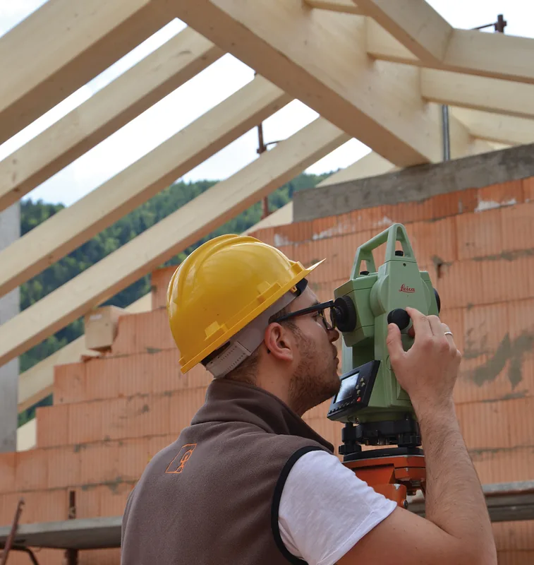
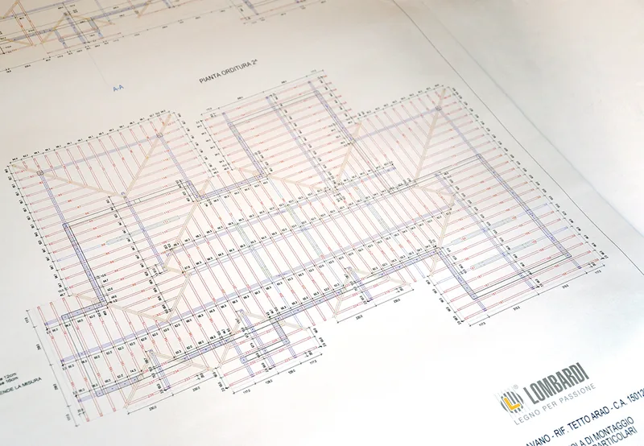
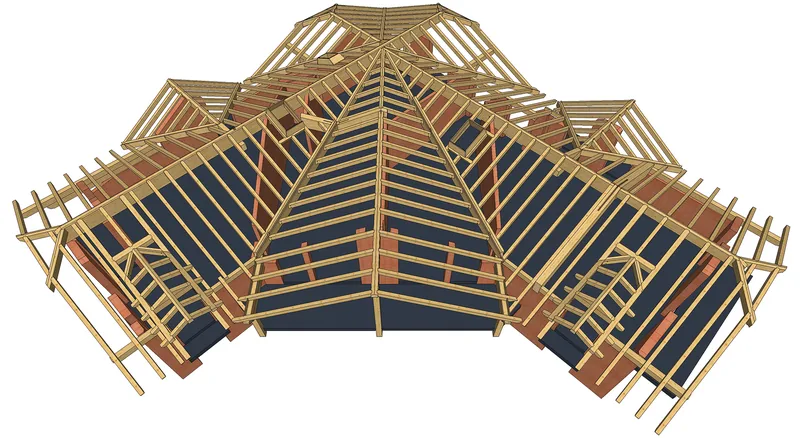
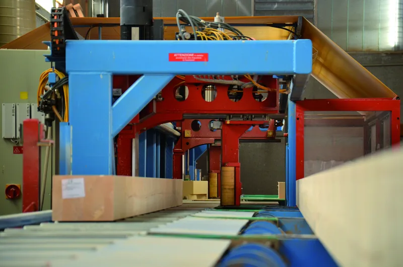
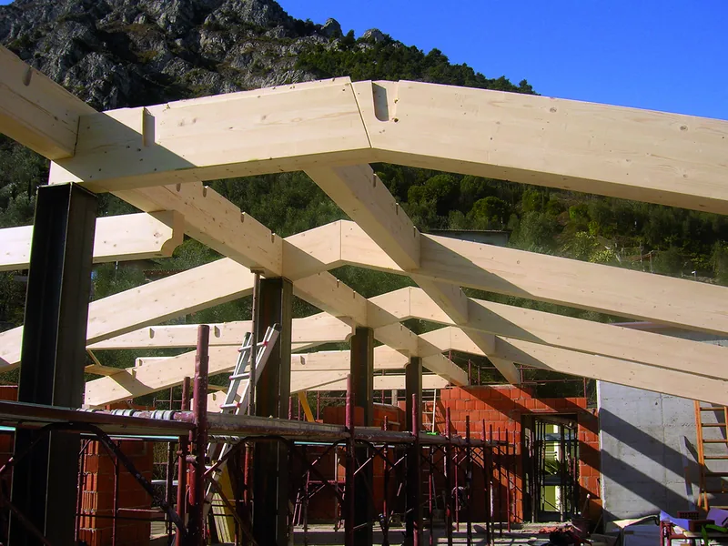

Servizio completo, dal rilievo alla posa
Tetti, soppalchi, solai, chioschi e portici. Il rilievo, il progetto e la produzione degli elementi li curiamo direttamente noi, con il legno lavorato nella nostra segheria.

Come lavoriamo
Sei passaggi, sempre gli stessi, che si tratti di un tetto intero o di un portico. In cantiere arrivano pezzi già tagliati, pronti da montare.
-

Rilievo in cantiere
Il rilievo lo facciamo noi, sul posto, anche con la stazione totale.
-

Progetto esecutivo
Il progetto esecutivo lo stendiamo noi, con la distinta di ogni elemento.
-

Modello della struttura
Prima del taglio la struttura si vede tutta, trave per trave, nel modello tridimensionale.
-

Taglio a controllo numerico
Il centro Hundegger K2 produce ogni elemento, compresi i nodi con piastre a scomparsa fissate con resine strutturali, spinotti o bulloni.
-

Trattamenti e completamento
Impregnanti antitarlo e antimuffa all'acqua, poi guaine, isolanti, listelli, tavolati, manto di copertura, mantovane e finestre.
-

Posa in opera
Il montaggio è affidato a squadre di carpentieri specializzati della zona.
Cosa realizziamo
Tetti nuovi, sovralzi, soppalchi e solai, e le strutture più piccole: chioschi, portici, tettoie, coperture. Per ognuna la stessa strada, dal rilievo alla posa.
- In massello: abete, larice, douglasia, rovere e castagno. Il massello
- In lamellare e bilama: larice e abete. Il lamellare
- Copertura: tegole, coppi o scandole.

Cosa serve per partire
Per un primo preventivo
Il comune del cantiere, le misure indicative e che tipo di lavoro è. Se avete disegni, un progetto o foto del tetto attuale, mandateli: si parte da lì.
Se c'è già un progetto
Mandatecelo insieme alla richiesta: è il punto di partenza per il progetto esecutivo della struttura in legno.
Poi
Veniamo in cantiere per il rilievo, e da lì si passa al progetto esecutivo.
Raccontateci il lavoro
Bastano due righe: che lavoro è, in che comune e più o meno che misure. Se avete un progetto o delle foto, meglio ancora. Poi vi richiamiamo noi.
Telefono 0465 621159 · info@segheria-lombardi.it